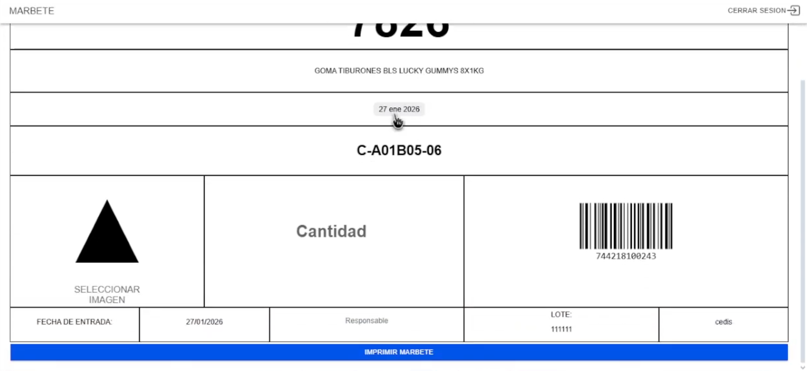
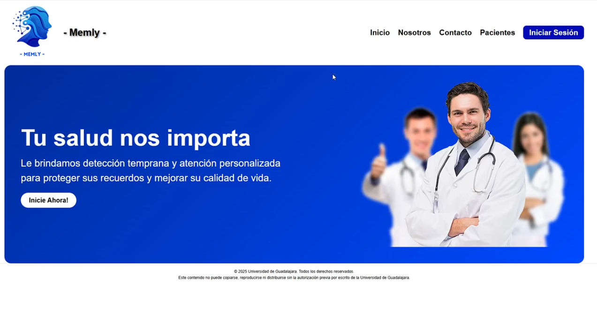
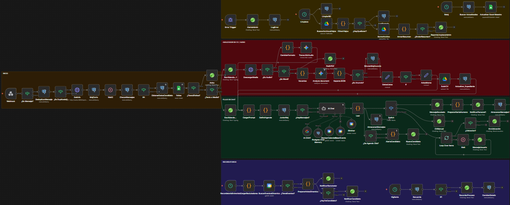
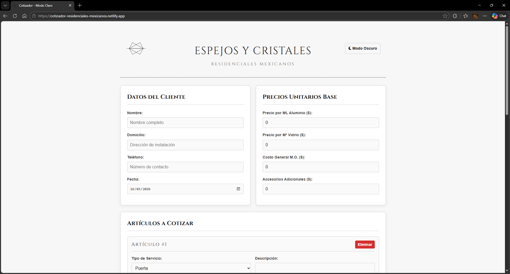
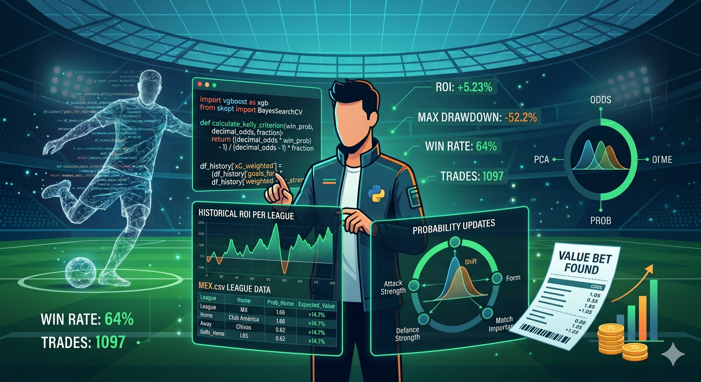

Seventeen Corp
Landing page corporativa premium para una agencia de desarrollo de software y automatizaciones. Desarrollada en Next.js con animaciones avanzadas e interfaz interactiva.
Ingeniero en Informatica
Curriculum Vitae¡Hola! Soy un Ingeniero en Informática apasionado por entender cómo funcionan las cosas, desde el código hasta el hardware.
Me especializo en el Backend y la Automatización. Disfruto creando APIs rápidas con Python (FastAPI), optimizando consultas complejas en SQL y diseñando flujos de trabajo inteligentes con herramientas como n8n.
No solo escribo código; también me interesan los componentes!. Me gusta optimizar hardware, configurar servidores y entender la infraestructura que sostiene al software. Siempre estoy buscando la forma más eficiente de resolver un problema.
Landing page corporativa premium para una agencia de desarrollo de software y automatizaciones. Desarrollada en Next.js con animaciones avanzadas e interfaz interactiva.

Sistema de optimización de base de datos y API REST para la generación concurrente de marbetes de productos.

Aplicación web enfocada en la detección temprana y prevención de Demencia y Alzheimer mediante ejercicios cognitivos.

Bot automatizado de WhatsApp diseñado en n8n para pre-filtrar y gestionar candidatos de reclutamiento.

Aplicación web interactiva (SPA) para calcular presupuestos en tiempo real, con firmas digitales y generación de PDFs.

Algoritmo para la predicción de victorias en el fútbol mexicano mediante el análisis de datos históricos (2002-2026).
Estoy disponible para nuevos proyectos y desafíos técnicos.